DBMS Mini Project · Project Guide
Find study notes by meaning — and the classmates studying the same ideas.
| Team | Darshan P Pawar (PES2UG24CS143) · Dhanush V Biradar (PES2UG24CS155) |
|---|---|
| College | PES University, Electronic City Campus · Dept. of CSE |
| Code | github.com/Darshanpawar7/DBMS-Mini-Project |
| This guide | What the project is · tech stack · how it works · screenshots · how to run it on your computer |
docs/ScholarMesh_Phase2_Report.pdf.A website where students upload their study notes, search them by meaning (not just exact words), and get matched into study groups with classmates who study the same topics.
| Role | What they can do |
|---|---|
| Student | Upload notes, search, save (bookmark) notes, enroll in courses, create / join / leave study groups, see their dashboard. |
| Group admin | A student who created or runs a group: edit the group, promote or remove members. |
| Admin | Platform manager: usage charts, manage users and roles, manage courses and tags, read the audit log. |
| Part | Technology | What it does here (in simple words) |
|---|---|---|
| Database | PostgreSQL 17 | Stores everything: users, courses, notes, groups, bookmarks, searches. Checks every rule. |
| Vector search | pgvector (PostgreSQL extension) | Stores each note passage as 384 numbers that capture its meaning, and finds the closest ones fast (HNSW index). |
| Keyword search | PostgreSQL full-text search | Classic word search with word stems ("normalize" ≈ "normalization") and ranking (GIN index). |
| AI model | all-MiniLM-L6-v2 via Transformers.js | Turns text into those 384 numbers ("embeddings"). Runs on your own computer — no API key, no cost. |
| Website + API | Next.js 16, React 19, TypeScript | The pages you see and the backend API they call. The browser never talks to the database directly. |
| Styling | Tailwind CSS 4 | The look and layout, including phone screens. |
| Login & security | bcrypt, signed JWT cookie, zod | Passwords stored only as hashes; a secure login cookie; every input checked. |
| Runs in | Docker (Docker Compose) | Starts the database with one command — nothing to install for PostgreSQL itself. |
| Testing | Vitest, Playwright | 101 automated tests: 91 code and database tests + 10 tests that click through the real website. |
| Version control | Git + GitHub | All code, history and documents. |
| Mode | How it works | Think of it as… |
|---|---|---|
| Keyword | Matches the actual words (full-text search, GIN index), ranks by relevance, highlights matches. | Ctrl+F across all notes |
| Semantic | Turns your question into 384 numbers and finds the passages whose numbers are closest (cosine similarity, HNSW index). | A librarian who understands what you mean |
| Hybrid (default) | Runs both and merges the two rankings (Reciprocal Rank Fusion), so exact words and meaning both count. | The best of both |
Public → every logged-in user · Course-only → students enrolled in that course · Private → only the owner (and admins).
One database function, fn_visible_doc_ids, makes this decision for every search, list, download and suggestion.
Each student gets an interest vector: the average meaning of the notes they uploaded or saved and the questions they searched. A group's interest is the average of its members'. Groups in your courses with a free seat are ranked by how close they are to you (70%) plus how many topic tags you share (30%). Classmates are ranked the same way.
| Table | Stores |
|---|---|
| STUDENT | Users (students and admins), password hash, role, active or not |
| COURSE | Courses, e.g. UE23CS351A Database Management Systems |
| ENROLLMENT | Which student takes which course in which semester (many-to-many) |
| DOCUMENT | Notes: title, text, file, visibility, owner, course |
| DOC_CHUNK | Passages of each note + their 384-number vectors (pgvector) |
| TAG / DOCUMENT_TAG | Topic labels and which notes have them |
| BOOKMARK | Notes each student saved |
| STUDY_GROUP / GROUP_MEMBERSHIP | Groups (per course, with a seat limit) and their members with roles |
| SEARCH_LOG | Every search (for history, analytics and interest profiles) |
| AUDIT_LOG | History of important changes (written only by triggers) |
The full ER diagram is on the next page. Column-by-column details are in the technical report (section 9).
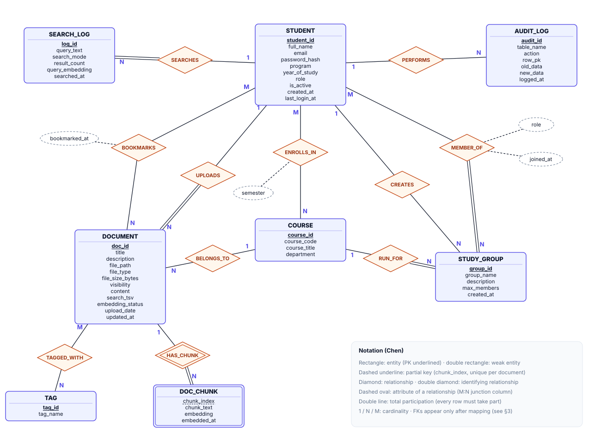
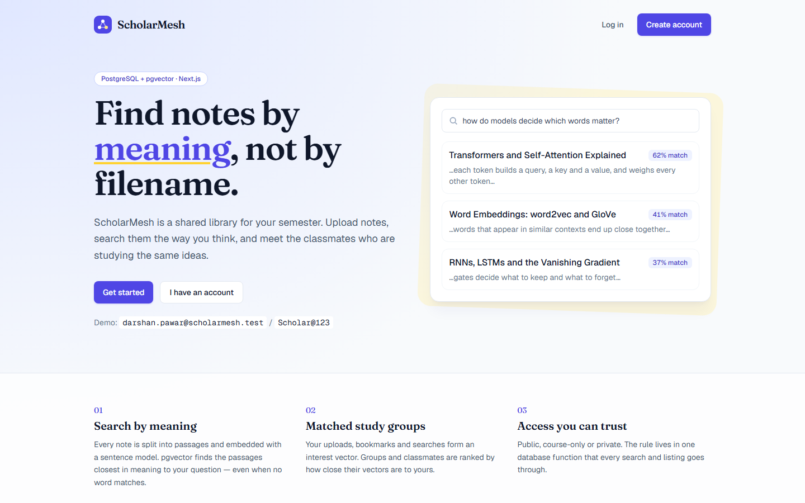
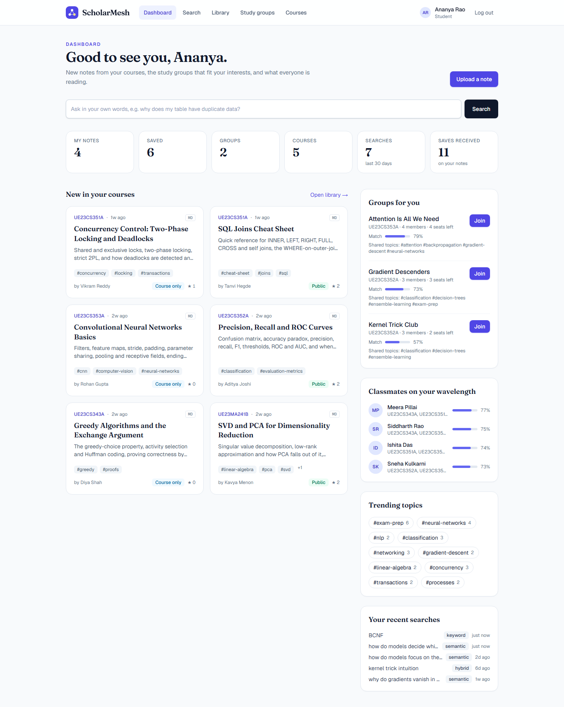
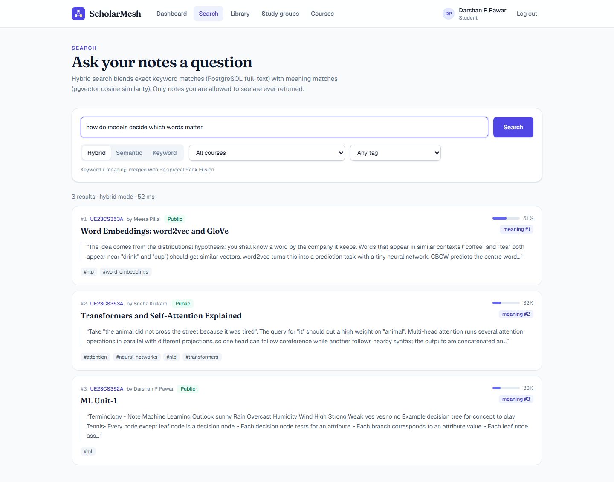
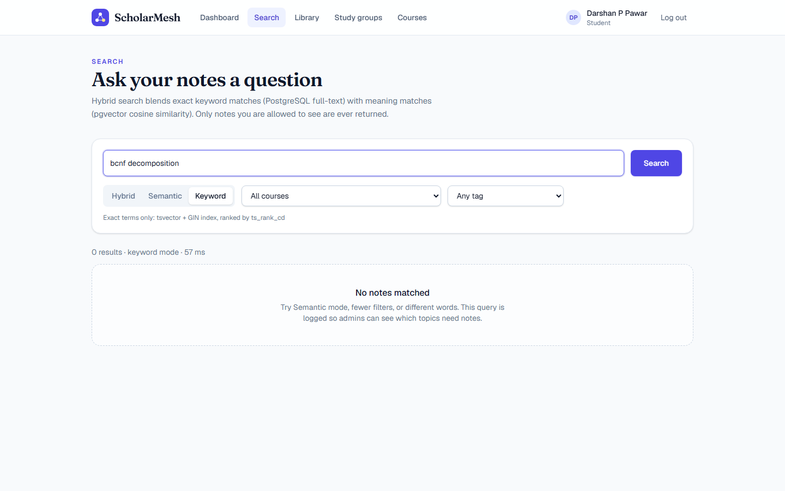
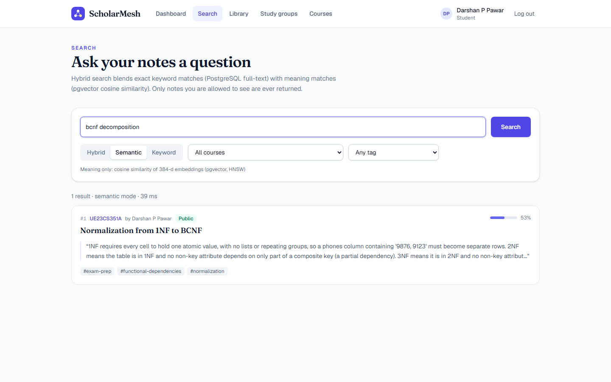
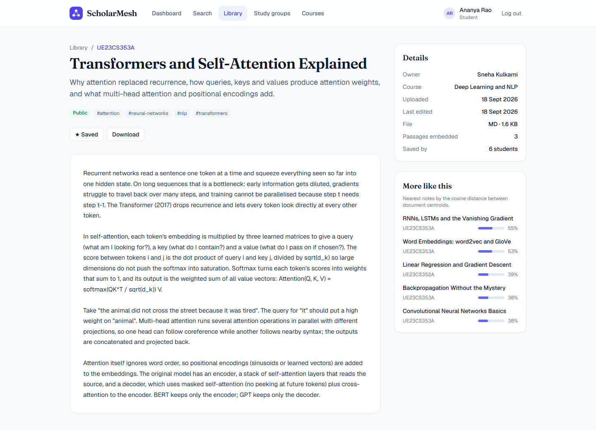
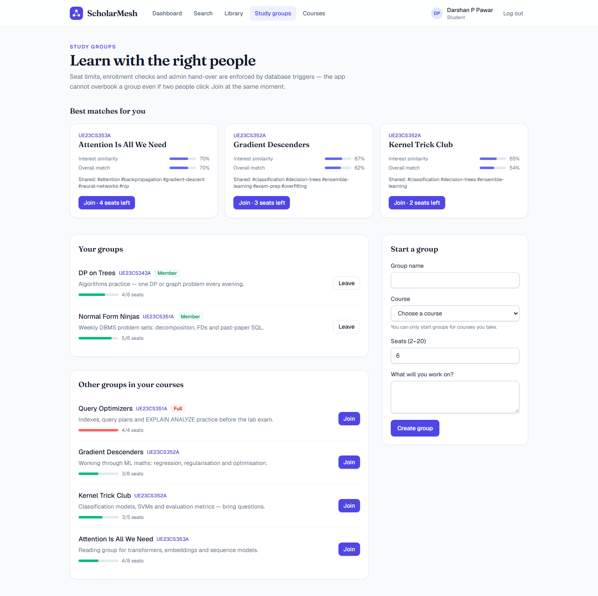
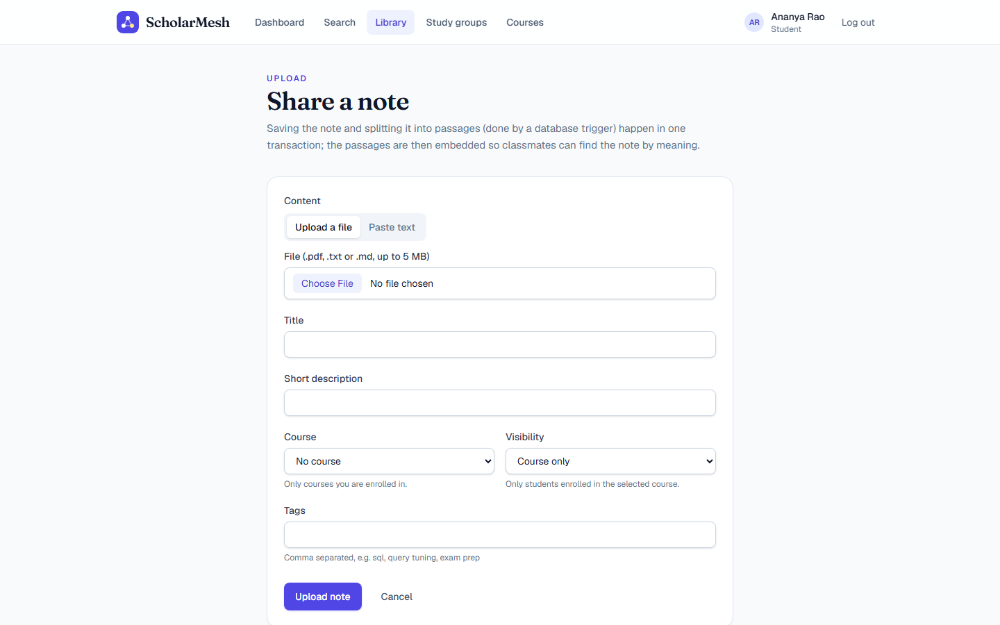
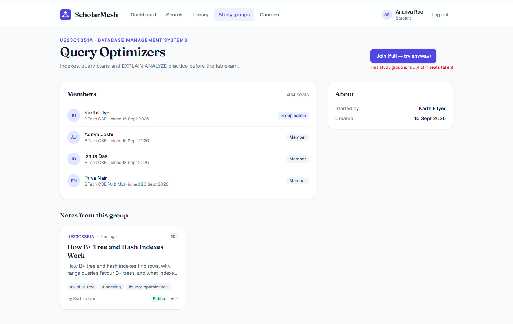
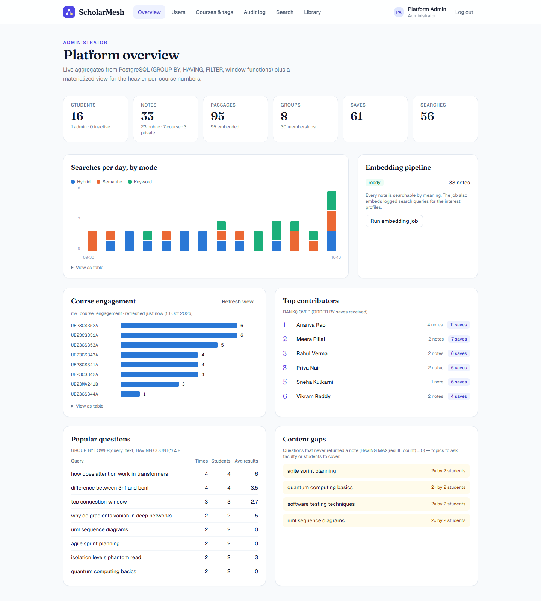
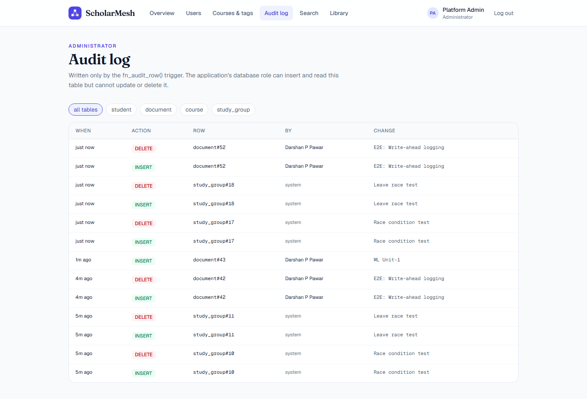
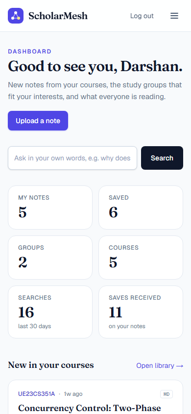
The layout adapts to small screens; the menu folds into a ☰ button.
All 17 screenshots (login, library, courses, admin users, courses & tags …) are in docs/screenshots/.
The commands below work in PowerShell (Windows) and in the Terminal on Mac/Linux.
git clone https://github.com/Darshanpawar7/DBMS-Mini-Project.git cd DBMS-Mini-Project
Open Docker Desktop first and wait until it says it is running. Then:
cp .env.example .env # database settings (example passwords are fine for local use) docker compose up -d # downloads and starts PostgreSQL + pgvector on port 5433
cd web cp .env.example .env.local # app settings (already match the database settings) npm install # installs packages (a few minutes the first time)
npm run db:setup # builds all tables, triggers, functions + demo data npm run db:embed # AI model reads every note (first run downloads the model)
npm run dev
Open http://localhost:3000 and log in:
| Who | Password | |
|---|---|---|
| Darshan P Pawar (student) | darshan.pawar@scholarmesh.test | Scholar@123 |
| Dhanush V Biradar (student) | dhanush.biradar@scholarmesh.test | Scholar@123 |
| Admin | admin@scholarmesh.test | Admin@12345 |
docker compose up -d → then
cd web and npm run dev. Stop the app with Ctrl + C; stop the database with docker compose down (your data is kept)..env, put the same app password into
web/.env.local (inside DATABASE_URL), and set AUTH_SECRET to a random value:
node -e "console.log(require('crypto').randomBytes(48).toString('base64url'))". Then run npm run db:setup again.| Problem | Fix |
|---|---|
docker says it cannot connect | Docker Desktop is not running. Open it, wait a minute, try again. |
| "password authentication failed for user scholarmesh_app" | The app password in web/.env.local doesn't match APP_DB_PASSWORD in .env. Make them equal, then npm run db:setup. |
| Port 3000 or 5433 already in use | App: npm run dev -- -p 3001. Database: change POSTGRES_PORT in .env and the port in DATABASE_URL, then docker compose up -d. |
| Semantic search finds nothing / notes show "Embedding…" | Run npm run db:embed (needs internet the first time to download the model). |
| Want the original demo data back | npm run db:setup then npm run db:embed (inside web). |
Command (inside web/ unless noted) | What it does |
|---|---|
npm run dev | Start the website at http://localhost:3000 |
npm test | Run the 91 code + database tests |
npm run test:e2e | Run the 10 browser tests (first time: npx playwright install chromium) |
npm run db:setup / npm run db:embed | Rebuild the database / compute missing embeddings |
(project folder) cat db/10_important_queries.sql | docker exec -i scholarmesh-db psql -U postgres -d scholarmesh | Run the demo SQL queries (joins, GROUP BY, window functions, vector search, EXPLAIN …) |
(project folder) docker exec -it scholarmesh-db psql -U postgres -d scholarmesh | Open a SQL prompt inside the database |
| Folder / file | What's inside |
|---|---|
db/ | All SQL, run in order: 01 schema → 02 Phase 2 changes → 03 views → 04 functions → 05 triggers → 06 permissions → 07–09 demo data → 10 demo queries |
web/src/app/ | Website pages and the /api endpoints |
web/src/lib/repos/ | All SQL the app runs (parameterised, safe from SQL injection) |
web/tests/ | Automated tests |
docs/ | Technical report (PDF), this guide, diagrams, screenshots |
docker-compose.yml, .env.example | Database container and settings templates |